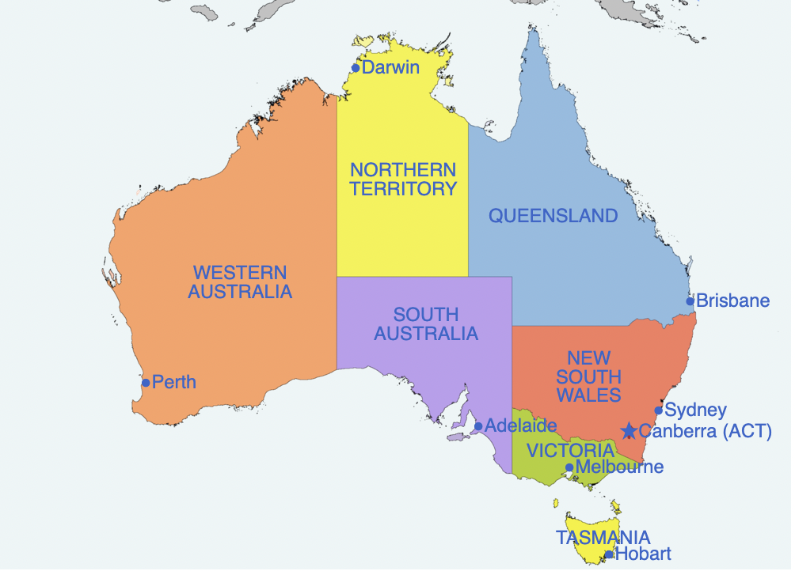

Australian Road Fatalities
Key Statistics
- 19,768,518 estimated number of vehicles
- 238,499 million kilometres travelled, an average of 12.1 thousand kilometres per vehicle
- 33,019 megalitres of fuel consumed
- 223,949 million tonne-kilometres of freight moved
Source
Goal
With the increasing population and increasing usage, keeping the roads safer is more and more important.

This is a informative web site about Australian Road Fatalities over
the last 8 years, showing summary statistics about the crash types, speed limits,
vehicle types, times of day, and the ages and genders of the people who died.
This will help you to get insights into the data, and to identify trends that are
changing over time.